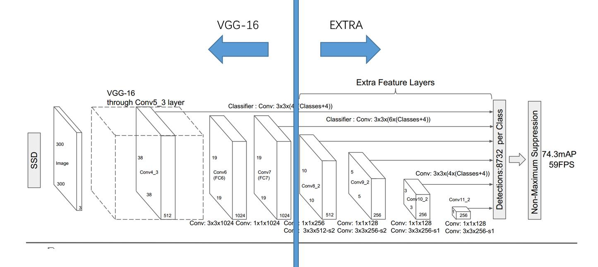
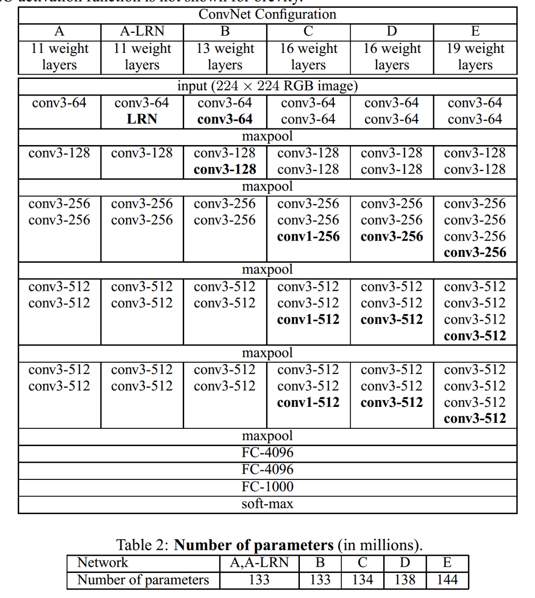
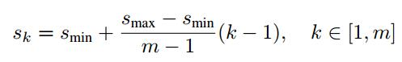

0.简介
SSD的全称是Single Shot MultiBox Detector，是目标检测中经典方法之一，它和YOLO一样，都是one-stage模式的，而像R-CNN和Fast R-CNN这些文章则是two-stage的，也就是需要先提取出proposals，再对各个proposal进行定位和分类。
接下来，我将尽我所能，结合自身理解和网上的一些参考资料，对Pytorch版本的SSD源码进行解析，代码仓库的地址是SSD-Pytorch,我将按照代码的执行顺序，并结合论文，自顶向下地进行分析，请务必细读论文。
1.代码解析
1.1 项目结构分析
在解析代码之前，我们很有必要先熟悉项目代码的组织结构，以下是项目的目录结构：1
2
3
4
5
6
7
8
9
10
11
12
13
14
15
16
17
18
19
20
21
22
23
24
25
26
27
28
29eval.py # evaluation
ssd.py # ssd模型定义部分
train.py # 训练
test.py # 测试
/data # 存放数据集的目录
/script # 下载数据集的脚本
COCO2014.sh # 下载COCO2014的脚本
VOC2017.sh # 下载PASCAL VOC 2017的脚本
VOC2012.sh # 下载PASCAL VOC 2012的脚本
/demo # 演示代码
/layers # 网络层中需要用到的代码
__init__.py
box_utils.py # 变换box坐标的一些函数
/functions # 一些辅助函数
__init__.py
detection.py # 将模型输出转化为的box的辅助模块
prior_box.py # 定义prior box （即default box）的辅助模块
/moudules # 损失函数模块
__init__.py
l2norm.py # 2范数
multibox_loss.py # multibox_loss损失函数
/utils # 辅助模块目录
__init__.py
augmentation.py # 数据增广辅助模块
/weights # 存放模型weight的目录
1.2 源码
1.2.1 SSD网络结构定义
首先从train.py中的train()函数入口开始分析：1
2
3
4
5
6
7
8
9
10
11
12
13
14
15
16
17
18
19
20
21
22
23
24
25
26
27
28
29
30
31
32
33
34
35
36
37
38
39
40
41
42
43
44
45
46
47
48
49
50
51
52
53
54
55
56
57
58
59
60
61
62
63
64
65
66
67
68
69
70
71
72
73
74
75
76
77
78
79
80
81
82
83
84
85
86
87
88
89
90
91
92
93
94
95
96
97
98
99
100
101
102
103
104
105
106
107
108
109
110
111
112
113
114
115
116
117
118
119
120
121
122
123
124
125
126
127
128
129
130
131
132
133
134
135
136
137
138
139
140
141
142
143
144
145
146
147
148
149
150
151
152
153
154
155
156
157
158
159
160
161
162
163
164
165
166
167
168
169
170
171
172
173
174
175
176
177
178
179
180
181
182
183
184
185
186
187
188
189
190
191
192
193
194
195
196
197
198
199
200
201
202
203
204
205
206
207
208
209
210
211
212
213
214
215
216
217
218
219
220
221
222
223
224
225
226
227
228
229
230
231
232
233
234
235
236
237
238
239
240
241
242
243
244
245
246
247
248
249
250
251
252
253
254
255
256
257from data.voc0712 import *
from utils.augmentations import SSDAugmentation
from layers.modules import MultiBoxLoss
from ssd import build_ssd
import os
import sys
import time
import torch
from torch.autograd import Variable
import torch.nn as nn
import torch.optim as optim
import torch.backends.cudnn as cudnn
import torch.nn.init as init
import torch.utils.data as data
import numpy as np
import argparse
from data import *
def str2bool(v):
return v.lower() in ("yes", "true", "t", "1")
parser = argparse.ArgumentParser(
description='Single Shot MultiBox Detector Training With Pytorch')
train_set = parser.add_mutually_exclusive_group()
parser.add_argument('--dataset', default='VOC', choices=['VOC', 'COCO'],
type=str, help='VOC or COCO')
parser.add_argument('--dataset_root', default=VOC_ROOT,
help='Dataset root directory path')
parser.add_argument('--basenet', default='vgg16_reducedfc.pth',
help='Pretrained base model')
parser.add_argument('--batch_size', default=32, type=int,
help='Batch size for training')
parser.add_argument('--resume', default=None, type=str,
help='Checkpoint state_dict file to resume training from')
parser.add_argument('--start_iter', default=0, type=int,
help='Resume training at this iter')
parser.add_argument('--num_workers', default=4, type=int,
help='Number of workers used in dataloading')
parser.add_argument('--cuda', default=True, type=str2bool,
help='Use CUDA to train model')
parser.add_argument('--lr', '--learning-rate', default=1e-3, type=float,
help='initial learning rate')
parser.add_argument('--momentum', default=0.9, type=float,
help='Momentum value for optim')
parser.add_argument('--weight_decay', default=5e-4, type=float,
help='Weight decay for SGD')
parser.add_argument('--gamma', default=0.1, type=float,
help='Gamma update for SGD')
parser.add_argument('--visdom', default=True, type=str2bool,
help='Use visdom for loss visualization')
parser.add_argument('--save_folder', default='weights/',
help='Directory for saving checkpoint models')
args = parser.parse_args()
if torch.cuda.is_available():
if args.cuda:
torch.set_default_tensor_type('torch.cuda.FloatTensor')
if not args.cuda:
print("WARNING: It looks like you have a CUDA device, but aren't " +
"using CUDA.\nRun with --cuda for optimal training speed.")
torch.set_default_tensor_type('torch.FloatTensor')
else:
torch.set_default_tensor_type('torch.FloatTensor')
if not os.path.exists(args.save_folder):
os.mkdir(args.save_folder)
def train():
if args.dataset == 'COCO':
if args.dataset_root == VOC_ROOT:
if not os.path.exists(COCO_ROOT):
parser.error('Must specify dataset_root if specifying dataset')
print("WARNING: Using default COCO dataset_root because " +
"--dataset_root was not specified.")
args.dataset_root = COCO_ROOT
cfg = coco
dataset = COCODetection(root=args.dataset_root,
transform=SSDAugmentation(cfg['min_dim'],
MEANS))
elif args.dataset == 'VOC':
if args.dataset_root == COCO_ROOT:
parser.error('Must specify dataset if specifying dataset_root')
cfg = voc
dataset = VOCDetection(root=args.dataset_root,
transform=SSDAugmentation(cfg['min_dim'],
MEANS))
if args.visdom:
import visdom
viz = visdom.Visdom()
# 构建一个SSD网络
ssd_net = build_ssd('train', cfg['min_dim'], cfg['num_classes'])
net = ssd_net
if args.cuda:
net = torch.nn.DataParallel(ssd_net)
cudnn.benchmark = True
if args.resume:
print('Resuming training, loading {}...'.format(args.resume))
ssd_net.load_weights(args.resume)
else:
vgg_weights = torch.load(args.save_folder + args.basenet)
print('Loading base network...')
ssd_net.vgg.load_state_dict(vgg_weights)
if args.cuda:
net = net.cuda()
if not args.resume:
print('Initializing weights...')
# initialize newly added layers' weights with xavier method
ssd_net.extras.apply(weights_init)
ssd_net.loc.apply(weights_init)
ssd_net.conf.apply(weights_init)
optimizer = optim.SGD(net.parameters(), lr=args.lr, momentum=args.momentum,
weight_decay=args.weight_decay)
criterion = MultiBoxLoss(cfg['num_classes'], 0.5, True, 0, True, 3, 0.5,
False, args.cuda)
net.train()
# loss counters
loc_loss = 0
conf_loss = 0
epoch = 0
print('Loading the dataset...')
epoch_size = len(dataset) // args.batch_size
print('Training SSD on:', dataset.name)
print('Using the specified args:')
print(args)
step_index = 0
if args.visdom:
vis_title = 'SSD.PyTorch on ' + dataset.name
vis_legend = ['Loc Loss', 'Conf Loss', 'Total Loss']
iter_plot = create_vis_plot('Iteration', 'Loss', vis_title, vis_legend)
epoch_plot = create_vis_plot('Epoch', 'Loss', vis_title, vis_legend)
data_loader = data.DataLoader(dataset, args.batch_size,
num_workers=args.num_workers,
shuffle=True, collate_fn=detection_collate,
pin_memory=True)
# create batch iterator
batch_iterator = iter(data_loader)
for iteration in range(args.start_iter, cfg['max_iter']):
if args.visdom and iteration != 0 and (iteration % epoch_size == 0):
update_vis_plot(epoch, loc_loss, conf_loss, epoch_plot, None,
'append', epoch_size)
# reset epoch loss counters
loc_loss = 0
conf_loss = 0
epoch += 1
if iteration in cfg['lr_steps']:
step_index += 1
adjust_learning_rate(optimizer, args.gamma, step_index)
# load train data
images, targets = next(batch_iterator)
if args.cuda:
images = Variable(images.cuda())
targets = [Variable(ann.cuda(), volatile=True) for ann in targets]
else:
images = Variable(images)
targets = [Variable(ann, volatile=True) for ann in targets]
# forward
t0 = time.time()
out = net(images)
# backprop
optimizer.zero_grad()
loss_l, loss_c = criterion(out, targets)
loss = loss_l + loss_c
loss.backward()
optimizer.step()
t1 = time.time()
loc_loss += loss_l.data[0]
conf_loss += loss_c.data[0]
if iteration % 10 == 0:
print('timer: %.4f sec.' % (t1 - t0))
print('iter ' + repr(iteration) + ' || Loss: %.4f ||' % (loss.data[0]), end=' ')
if args.visdom:
update_vis_plot(iteration, loss_l.data[0], loss_c.data[0],
iter_plot, epoch_plot, 'append')
if iteration != 0 and iteration % 5000 == 0:
print('Saving state, iter:', iteration)
torch.save(ssd_net.state_dict(), 'weights/ssd300_COCO_' +
repr(iteration) + '.pth')
torch.save(ssd_net.state_dict(),
args.save_folder + '' + args.dataset + '.pth')
def adjust_learning_rate(optimizer, gamma, step):
"""Sets the learning rate to the initial LR decayed by 10 at every
specified step
# Adapted from PyTorch Imagenet example:
# https://github.com/pytorch/examples/blob/master/imagenet/main.py
"""
lr = args.lr * (gamma ** (step))
for param_group in optimizer.param_groups:
param_group['lr'] = lr
def xavier(param):
init.xavier_uniform(param)
def weights_init(m):
if isinstance(m, nn.Conv2d):
xavier(m.weight.data)
m.bias.data.zero_()
def create_vis_plot(_xlabel, _ylabel, _title, _legend):
return viz.line(
X=torch.zeros((1,)).cpu(),
Y=torch.zeros((1, 3)).cpu(),
opts=dict(
xlabel=_xlabel,
ylabel=_ylabel,
title=_title,
legend=_legend
)
)
def update_vis_plot(iteration, loc, conf, window1, window2, update_type,
epoch_size=1):
viz.line(
X=torch.ones((1, 3)).cpu() * iteration,
Y=torch.Tensor([loc, conf, loc + conf]).unsqueeze(0).cpu() / epoch_size,
win=window1,
update=update_type
)
# initialize epoch plot on first iteration
if iteration == 0:
viz.line(
X=torch.zeros((1, 3)).cpu(),
Y=torch.Tensor([loc, conf, loc + conf]).unsqueeze(0).cpu(),
win=window2,
update=True
)
if __name__ == '__main__':
train()
那些命令行参数可以暂且不看，当然，这些参数也很常见。train()函数的第97行ssd_net = build_ssd('train', cfg['min_dim'], cfg['num_classes'])，build一个SSD模型。而build_ssd()函数的定义如下：
1 | def build_ssd(phase, size=300, num_classes=21): |
第一个参数是用来标定是训练还是测试过程，第二个size是SSD输入的分辨率，SSD-300模型的输入就是300，num_classes是所有目标的类别数+背景，我们这里用的是VOC dataset，所以物体共有20类，所以一共是21。可以看到，该函数中又调用了multibox()函数具体负责搭建模型工作.1
2
3
4base_, extras_, head_ = multibox(vgg(base[str(size)], 3),
add_extras(extras[str(size)], 1024),
mbox[str(size)],
num_classes)
因为论文中明确说到，SSD的base network用的是VGG，更具体点说，SSD-300用的base network是VGG-16,SSD的整体架构如下所示：

而VGG网络具体的building block参见下图：

所以multibox()函数的前2个参数分别是VGG-16和Extra网络部分，而第3个参数是指明多个层输出中，即multi-box部分，每个feature map上的每个location输出几个default box。所以我们下面先分析一下VGG和Extra网络部分的具体结构啦。
1 | # This function is derived from torchvision VGG make_layers() |
上面的代码就照葫芦画瓢搭建出来即可，这里代码看上去有点不是很直观，当然，我们可以自己一层一层的写，不要任何循环，那样代码的通用性就差了些，稍微看下这个代码也是可以很快看明白的。不过我们要注意SSD-300的base network还是和VGG-16有一定的差别的，在论文的第3部分的Base network小节有具体描述，它们是：
- 把VGG-16的fc6和fc7全部换成卷积层
- 把VGG-16的 2x2-stride-2换成了 3x3-stride-1
- 在conv6层中运用了空洞卷积，以扩大感受野
- 丢掉了所有的dropout层和fc8
而Extra 网络部分的代码如下:1
2
3
4
5
6
7
8
9
10
11
12
13
14def add_extras(cfg, i, batch_norm=False):
# Extra layers added to VGG for feature scaling
layers = []
in_channels = i
flag = False # 是否用3*3 conv的标志
for k, v in enumerate(cfg):
if in_channels != 'S':
if v == 'S':
layers += [nn.Conv2d(in_channels, cfg[k + 1], kernel_size=(1, 3)[flag], stride=2, padding=1)]
else:
layers += [nn.Conv2d(in_channels, v, kernel_size=(1, 3)[flag])]
flag = not flag
in_channels = v
return layers
同样，这些代码看上去一时半会还不好看懂，反正按照论文中的架构build出来即可。
Okay，现在我们把VGG部分和Extra部分都搭建好了，传给multibox(vgg, extra_layers, cfg, num_classes)函数总和起来即可，如下：1
2
3
4
5
6
7
8
9
10
11
12
13
14
15def multibox(vgg, extra_layers, cfg, num_classes):
loc_layers = []
conf_layers = []
vgg_source = [21, -2]
for k, v in enumerate(vgg_source):
loc_layers += [nn.Conv2d(vgg[v].out_channels,
cfg[k] * 4, kernel_size=3, padding=1)]
conf_layers += [nn.Conv2d(vgg[v].out_channels,
cfg[k] * num_classes, kernel_size=3, padding=1)]
for k, v in enumerate(extra_layers[1::2], 2):
loc_layers += [nn.Conv2d(v.out_channels, cfg[k]
* 4, kernel_size=3, padding=1)]
conf_layers += [nn.Conv2d(v.out_channels, cfg[k]
* num_classes, kernel_size=3, padding=1)]
return vgg, extra_layers, (loc_layers, conf_layers)
这里稍微注意一下，SSD中采用了Multi Box思想，也就是说，在网络中不同阶段都输出一定数量的box，因为不同阶段的scale是不同的，在网络的前面输出小物体可能更精确，而网络偏后面部分输出大物体会更精确一些。具体来说，论文中选用了VGG的Conv4_3,Conv7(即VGG的FC7位置),Conv8_2,Conv9_2,Conv10_2,Conv11_2这6个地方的feature maps，每个feature maps的每个location分别对应输出4, 6, 6, 6, 4, 4个default box。举例来说，比如VGG的Conv4_3层的输出feature maps的大小是38x38，那么每个像素点都会输出4个defalut box，于是一共输出38x38x4个default boxes。
综合上述的6层，输入一张图片，会输出38*38*4 + 19*19*6 + 10*10*6 + 5*5*6 + 3*3*4 + 1*1*4 = 8732个预选框。
这里有个trick需要注意一下，就是在Conv4_3层的L2 normalize，论文中3.1部分如下表述到：
Since, as pointed out in [12], conv4 3 has a different feature scale compared to the other layers, we use the L2 normalization technique introduced in [12] to scale the feature norm at each location in the feature map to 20 and learn the scale during back propagation.
代码中layers/modules/l2norm.py有这样一个归一化层，不过现在Pytorch已经支持了这个API。有了上述部分，我们终于可以build出来SSD了。
1.2.2 default boxes定义
再等一下…
我们说SSD其实也是有基于anchor box思想的，也就是说，我们会预先给每个输出的框预定义一个应该的大小和长宽比，模型实际输出的中心位置、长、宽等这些数据都是基于这些预定义框的，即default box，所以我们需要去先定义这些default boxes，具体的参见论文2.2小节Choosing scales and aspect ratios的描述,思想大概是这样的：
我们知道，SSD在网络的不同层都会输出一定量的box，例如VGG的Conv4_3层，Extra中的一些层，越靠前越有可能检测出一些小的物体，而越靠后就越可能检测出高层次语义的物体，也即大物体。于是作者给每个feature maps定义了一个scale，也就是default box的大小，各个feature maps的scale计算方法如下：

即最开始的层的scale是0.2，最后面的是0.9，中间依次递增，哦，这个scale是default box相对于整个图片的比例（也就是SSD-300中的输入尺寸300）。
大小定义完了，我们还要定义default box的长宽比，比如说，一辆车子更有可能是width>height，而一个人的话就更有可能是width<height的情况。当然，你肯定也有不符合这种“常规”的物体，比如说。。胖子，那他的长宽比可能就是width=height。。。我不是故意黑胖子，这里只是调侃一下，于是作者为每种大小的default box又定义了几个aspect ratio，即a_r∈{1,2,3,1/2,1/3}，于是Width=S_k * sqrt(a_r), Height=Width=S_k / sqrt(a_r),这里的Sk就是每种default box的大小，即上述的scale。在aspect ratio为1的时候，作者还新增了一种scale，`S_k’=sqrt(s_k , s{k+1} )`
这些框的scale和aspect ratio都定义完了后，我们到时候让模型输出数据的是基于一种中心位置的定位方式，这是我自己给这种定位方式取的名字，反正明白啥意思就行，就是说，到时候每个输出框会依次输出4个数据（框中心的x坐标，框中心的y坐标，框的宽相对于整个图片的比例，框的高相对于整个图片的比例）。
而还有一种定位方式，不妨称之为基于左上角和右下角坐标的表述方式，也就是PASCAL VOC 数据集的标注格式，关于这个数据集的一些信息介绍，可以看我之前记的一篇文章PASCAL VOC数据集介绍,即：1
2
3
4
5
6<bndbox>
<xmin>3</xmin>
<ymin>304</ymin>
<xmax>500</xmax>
<ymax>375</ymax>
</bndbox>
OK,说了这么多，看下代码就非常清晰了，代码可能和我上述的讲解有那么一丢丢不一样，整体思路是完全没问题的：
1 | from __future__ import division |
1.2.2 训练
终于可以开始训练了，接着上述代码流程，如果是resume的话，直接载入SSD-300的各种权重参数，如果是第一次训练的话，只有SSD的VGG部分会载入pre-trained的权重，地址是https://s3.amazonaws.com/amdegroot-models/vgg16_reducedfc.pth。此外，还要初始化extra部分、loc部分、conf部分的参数，权重初始化方式用的是xavier 方法。1
2
3
4optimizer = optim.SGD(net.parameters(), lr=args.lr, momentum=args.momentum,
weight_decay=args.weight_decay)
criterion = MultiBoxLoss(cfg['num_classes'], 0.5, True, 0, True, 3, 0.5,
False, args.cuda)
从这里可以看到，loss function是自定义的MultiBoxLoss模块，它在modules/multibox_loss.py文件中被如下定义：1
2
3
4
5
6
7
8
9
10
11
12
13
14
15
16
17
18
19
20
21
22
23
24
25
26
27
28
29
30
31
32
33
34
35
36
37
38
39
40
41
42
43
44
45
46
47
48
49
50
51
52
53
54
55
56
57
58
59
60
61
62
63
64
65
66
67
68
69
70
71
72
73
74
75
76
77
78
79
80
81
82
83
84
85
86
87
88
89
90
91
92
93
94
95
96
97
98
99
100
101
102
103
104
105
106
107
108
109
110
111
112
113
114
115
116
117
118
119
120
121
122
123
124
125
126
127
128
129
130
131
132
133
134
135
136
137
138
139
140
141
142
143
144
145
146
147
148
149
150
151
152
153
154
155
156
157
158
159
160
161
162
163# -*- coding: utf-8 -*-
import torch
import torch.nn as nn
import torch.nn.functional as F
from torch.autograd import Variable
from data import coco as cfg
from ..box_utils import match, log_sum_exp
class MultiBoxLoss(nn.Module):
"""SSD Weighted Loss Function
Compute Targets:
1) Produce Confidence Target Indices by matching ground truth boxes
with (default) 'priorboxes' that have jaccard index > threshold parameter
(default threshold: 0.5).
2) Produce localization target by 'encoding' variance into offsets of ground
truth boxes and their matched 'priorboxes'.
3) Hard negative mining to filter the excessive number of negative examples
that comes with using a large number of default bounding boxes.
(default negative:positive ratio 3:1)
Objective Loss:
L(x,c,l,g) = (Lconf(x, c) + αLloc(x,l,g)) / N
Where, Lconf is the CrossEntropy Loss and Lloc is the SmoothL1 Loss
weighted by α which is set to 1 by cross val.
Args:
c: class confidences,
l: predicted boxes,
g: ground truth boxes
N: number of matched default boxes
See: https://arxiv.org/pdf/1512.02325.pdf for more details.
"""
def __init__(self, num_classes, overlap_thresh, prior_for_matching,
bkg_label, neg_mining, neg_pos, neg_overlap, encode_target,
use_gpu=True):
super(MultiBoxLoss, self).__init__()
self.use_gpu = use_gpu
self.num_classes = num_classes
self.threshold = overlap_thresh # iou阈值
self.background_label = bkg_label # 背景标签 0
self.encode_target = encode_target
self.use_prior_for_matching = prior_for_matching
self.do_neg_mining = neg_mining
self.negpos_ratio = neg_pos # 负正样例比
self.neg_overlap = neg_overlap # 负样本阈值 没用到
self.variance = cfg['variance']
def forward(self, predictions, targets):
"""Multibox Loss
Args:
predictions (tuple): A tuple containing loc preds, conf preds,
and prior boxes from SSD net.
conf shape: torch.size(batch_size,num_priors,num_classes)
loc shape: torch.size(batch_size,num_priors,4)
priors shape: torch.size(num_priors,4)
targets (tensor): Ground truth boxes and labels for a batch,
shape: [batch_size,num_objs,5] (last idx is the label).
"""
# loc_data [batch, 8732, 4]
# conf_data [batch, 8732, 21]
# priors [8732, 4]
loc_data, conf_data, priors = predictions
num = loc_data.size(0)
priors = priors[:loc_data.size(1), :] # 维度不变
num_priors = (priors.size(0)) # 8732
num_classes = self.num_classes # 21
# match priors (default boxes) and ground truth boxes
loc_t = torch.Tensor(num, num_priors, 4)
conf_t = torch.LongTensor(num, num_priors)
for idx in range(num):
# target shape [batch_size,num_objs,5]
truths = targets[idx][:, :-1].data # [num_objs,4],即坐标位置
labels = targets[idx][:, -1].data # 最后一维是类别的label,因为用的是-1，不是-1:,所以返回的shape是 [num_objs]
defaults = priors.data
# ！！！关键函数！！！ default box和gt box之前的匹配
#
# 这里输入的defaults是基于中心表示的，输入的truths是基于左上角和右下角坐标表示的，在match函数中会有相应的处理
#
# 最后两个个参数loc_t, conf_t 其实是输出参数，
# loc_t在调用后，返回的是第idx图片张输入时，各个default box 匹配到的gt box，相对于default box的偏移量
# conf_t在调用后，返回的是第idx张图片输入时，各个default box匹配到的gt box的类别label值。
# 注意，不一定所有的default box都有label, 例如有的default box 和 匹配到的gt box overlap太低，就被视作了背景
match(self.threshold, truths, defaults, self.variance, labels,
loc_t, conf_t, idx)
if self.use_gpu:
loc_t = loc_t.cuda()
conf_t = conf_t.cuda()
# wrap targets
# # 用Variable封装loc_t, 新版本的 PyTorch 无需这么做, 只需要将 requires_grad 属性设置为 True 就行了
# loc_t: shape [batch,num_priors,4] encoded offsets to learn
# conf_t: shape [batch,num_priors] top class label for each prior
loc_t = Variable(loc_t, requires_grad=False)
conf_t = Variable(conf_t, requires_grad=False)
# 筛选出那些 label不是0的default box.类型为bool pos: shape[batch,num_priors]
pos = conf_t > 0 # 即正样本下标
# 统计label不是0的default box数量， 所有的default box数量为8732 [batch,1]
num_pos = pos.sum(dim=1, keepdim=True)
# Localization Loss (Smooth L1)
# Shape: [batch,num_priors,4]
# pos_idx: [batch, num_priors, 4]，这里的pos_idx作用就是论文（2）式中的X_{i,j}^{p}
pos_idx = pos.unsqueeze(pos.dim()).expand_as(loc_data)
loc_p = loc_data[pos_idx].view(-1, 4) # 预测的offset
loc_t = loc_t[pos_idx].view(-1, 4) # 匹配的gt的offset
# smooth-L1 loss
loss_l = F.smooth_l1_loss(loc_p, loc_t, size_average=False)
# Compute max conf across batch for hard negative mining
# 计算最大置信度，以进行难负样本挖掘
# conf_data: [batch,num_priors,num_classes]
batch_conf = conf_data.view(-1, self.num_classes) # batch_conf: [batch * num_priors,num_classes]
# batch_conf.gather(1, conf_t.view(-1, 1)) 返回的是每个default box 真实label 对应的预测置信度
# batch_conf.gather(1, conf_t.view(-1, 1)) shape 为 [batch*num_priors,1]
# 下式求的是论文（3）式
loss_c = log_sum_exp(batch_conf) - batch_conf.gather(1, conf_t.view(-1, 1))
# Hard Negative Mining
# 难负样本挖掘, 按照loss进行排序, 取loss最大的负样本参与更新
# loss_c shape 为[batch*num_priors,1]
# 先让那些正样本，也就是default box 对应的 gt lable 不是背景的样本，先设置为0
loss_c[pos] = 0 # filter out pos boxes for now
# loss_c 还原回到 [batch, num_priors]
loss_c = loss_c.view(num, -1)
# 对loss_c的下标进行降序排序，得到排序后的下标
# 因为我们在前面将正样本的loss_c置为了0，所以排在前面的都是那些负样本的loss_c
_, loss_idx = loss_c.sort(1, descending=True)
# 对下标进行排序，得到下标的下标 ，shape 为[batch,num_priors]
_, idx_rank = loss_idx.sort(1)
# pos的shape是[batch,num_priors]， num_pos统计的是每个样本的正样本数目，也就是obj的数量,shape 为[batch,1]
num_pos = pos.long().sum(1, keepdim=True)
# 根据正样本的数量，确定负样本的数量
num_neg = torch.clamp(self.negpos_ratio * num_pos, max=pos.size(1) - 1)
# 获取到负样本的下标类型为bool，shape[batch,num_priors]
neg = idx_rank < num_neg.expand_as(idx_rank)
# Confidence Loss Including Positive and Negative Examples
# conf_data的shape是[batch,num_priors,num_classes]
# pos的shape是 [batch,num_priors],类型为bool，标定某个defaul box是否是正样本
# pos_idx 的shape扩张后变为 [batch,num_priors，num_classes]，也是bool类型
pos_idx = pos.unsqueeze(2).expand_as(conf_data)
# neg 同理 pos
neg_idx = neg.unsqueeze(2).expand_as(conf_data)
# 只要样本是正样本或者负样本，就选出来，准备算到总的loss里面
# conf_p的shape 是 [batch*num_priors,num_classes]
conf_p = conf_data[(pos_idx + neg_idx).gt(0)].view(-1, self.num_classes)
# 只要是正或者负样本，就取出来，targets_weighted表示它的真实标签
# targets_weighted 的shape为[batch,num_priors]
targets_weighted = conf_t[(pos + neg).gt(0)]
loss_c = F.cross_entropy(conf_p, targets_weighted, size_average=False)
# Sum of losses: L(x,c,l,g) = (Lconf(x, c) + αLloc(x,l,g)) / N
N = num_pos.data.sum()
loss_l /= N
loss_c /= N
return loss_l, loss_c
其实我觉得这就是最关键、也是比较难一下子搞懂的地方。就说几个比较重要的部分：
- 先从
forward()函数开始，一直到第86行，有个match()函数，也就是把default box和ground-truth的框给匹配起来的函数。在论文的Matching Startegy部分有说道，不仅要匹配每个ground truth box对应的default box，同样也要匹配那些与ground turth box交并比大于0.5的default box.
什么意思呢？我的理解就是，假如我们只匹配每个ground truth box对应的default box，然后只根据这些default box和预测的box求loss，再反向传播求梯度，更新参数。。balabala的，就会迫使模型去输出更少但是更精确的框（也即迫使模型去学习一种能力，什么能力呢？选择输出最佳的能力）；而如果我们也匹配那些与ground turth box交并比大于0.5的default box，把这些default box和预测的box之间的loss也加入到最终的损失中去，到时候模型发现一旦有物体与ground truth box的overlap大于0.5，我就把它输出（当然，这里可能不精确，但是输出框框的数目更多了，到时候用non-max suppersion给它筛选一下就可以了）。千言万语说了这么多，其实就是论文中段话的意思：
We begin by matching each ground truth box to the default box with the best jaccard overlap (as in MultiBox [7]). Unlike MultiBox, we then match default boxes to any ground truth with jaccard overlap higher than a threshold (0.5). This simplifies the learning problem, allowing the network to predict high scores for multiple overlapping default boxes rather than requiring it to pick only the one with maximum overlap.
下面是match()函数，我加了一些注释：1
2
3
4
5
6
7
8
9
10
11
12
13
14
15
16
17
18
19
20
21
22
23
24
25
26
27
28
29
30
31
32
33
34
35
36
37
38
39
40
41
42
43
44
45
46
47
48
49
50
51
52
53
54
55
56
57
58
59
60
61
62
63
64
65
66
67
68def match(threshold, truths, priors, variances, labels, loc_t, conf_t, idx):
"""Match each prior box with the ground truth box of the highest jaccard
overlap, encode the bounding boxes, then return the matched indices
corresponding to both confidence and location preds.
Args:
threshold: (float) The overlap threshold used when mathing boxes.
truths: (tensor) Ground truth boxes, Shape: [num_obj, 4].
priors: (tensor) Prior boxes from priorbox layers, Shape: [n_priors,4].
variances: (tensor) Variances corresponding to each prior coord,
Shape: [num_priors, 4].
labels: (tensor) All the class labels for the image, Shape: [num_obj].
loc_t: (tensor) Tensor to be filled w/ endcoded location targets.
conf_t: (tensor) Tensor to be filled w/ matched indices for conf preds.
idx: (int) current batch index
Return:
The matched indices corresponding to 1)location and 2)confidence preds.
"""
# jaccard index , shape [num_objects,n_priors]
overlaps = jaccard(
truths,
point_form(priors)
)
# 在论文的Matching Strategy说到，不仅对每个GT box,去match最匹配的default box，也对每个default box，去match最匹配的GT-box
# 这样一来，可以让网络预测出更多的overlapping的default box，而不要让网络去选择一个最好的，至于最后怎么选择，用non-max suppression即可。
# (Bipartite Matching)
# [num_objects，1]
# 表示和每个GT box重叠得最好的那个default box
best_prior_overlap, best_prior_idx = overlaps.max(1, keepdim=True)
# [1,num_priors]
# 表示和每个default box重叠得最好的那个GT box
best_truth_overlap, best_truth_idx = overlaps.max(0, keepdim=True)
# shape [num_objects]
best_truth_idx.squeeze_(0)
best_truth_overlap.squeeze_(0)
# shape [num_prior]
best_prior_idx.squeeze_(1)
best_prior_overlap.squeeze_(1)
# 该语句会将与gt box匹配度最好的prior box 的交并比置为 2, 确保其最大, 以免防止某些 gtbox 没有匹配的 priorbox.
best_truth_overlap.index_fill_(0, best_prior_idx, 2) # ensure best prior
# TODO refactor: index best_prior_idx with long tensor
# ensure every gt matches with its prior of max overlap
for j in range(best_prior_idx.size(0)):
best_truth_idx[best_prior_idx[j]] = j
# best_truth_idx表示的是每个default box 对应的最佳匹配的 gt box下标，下标元素的取值范围是 0~(num_objs-1)
# 元素的个数，也就是len(best_truth_idx)=num_priors, 也就是defalut box的个数。
#
# truth又是一个shape为[num_objs,4]的tensor，表示的是这么多个objs的box
#
# 所以truths[best_truth_idx] 代表的就是 每个default box 对应的最匹配的 gt box
matches = truths[best_truth_idx] # Shape: [num_priors,4]
# conf是每个default box对应最匹配的gt box的类别，记住，0代表背景
conf = labels[best_truth_idx] + 1 # Shape: [num_priors]
# 对于每个default box，如果它与某个gt box的overlap小于阈值，那么就将这个default box的类别设置为0，即背景
conf[best_truth_overlap < threshold] = 0 # label as background
""" 把每个defalut box 匹配到的 gt box转化为 中心坐标的形式 """
loc = encode(matches, priors, variances)
loc_t[idx] = loc # [num_priors,4] encoded offsets to learn
conf_t[idx] = conf # [num_priors] top class label for each prior
- 还有就是Hard negative mining部分，中文是难样本挖掘，反正翻译起来很怪就对了，无所谓了。意思就是，我们知道SSD中会有大量的default box（8732个）,这其中有绝大部分都是背景，只有很少一部分是object。即positive的样本数会远少于negative样本数。为了不让模型过度的学习negative信息，我们对所有负样本的置信度进行排序，只选择置信度较高的一部分负样本，使得负样本和正样本的比例是3:1，也就是
MultiBoxLoss类代码中112-156行的部分。
1.2.3 测试
测试代码，主要就是加载预训练的模型，1
2
3
4
5
6
7
8
9
10
11
12
13
14
15
16
17
18
19
20
21
22
23
24
25
26
27
28
29
30
31
32
33
34
35
36
37
38
39
40
41
42
43
44
45
46
47
48
49
50
51
52
53
54
55
56
57
58
59
60
61
62
63
64
65
66
67
68
69
70
71
72
73
74
75
76
77
78
79
80
81
82
83
84
85
86
87
88
89
90
91
92
93
94
95
96
97from __future__ import print_function
import sys
import os
import argparse
import torch
import torch.nn as nn
import torch.backends.cudnn as cudnn
import torchvision.transforms as transforms
from torch.autograd import Variable
from data import VOC_ROOT, VOC_CLASSES as labelmap
from PIL import Image
from data import VOCAnnotationTransform, VOCDetection, BaseTransform, VOC_CLASSES
import torch.utils.data as data
from ssd import build_ssd
parser = argparse.ArgumentParser(description='Single Shot MultiBox Detection')
parser.add_argument('--trained_model', default='weights/ssd_300_VOC0712.pth',
type=str, help='Trained state_dict file path to open')
parser.add_argument('--save_folder', default='eval/', type=str,
help='Dir to save results')
parser.add_argument('--visual_threshold', default=0.6, type=float,
help='Final confidence threshold')
parser.add_argument('--cuda', default=True, type=bool,
help='Use cuda to train model')
parser.add_argument('--voc_root', default=VOC_ROOT, help='Location of VOC root directory')
parser.add_argument('-f', default=None, type=str, help="Dummy arg so we can load in Jupyter Notebooks")
args = parser.parse_args()
if args.cuda and torch.cuda.is_available():
torch.set_default_tensor_type('torch.cuda.FloatTensor')
else:
torch.set_default_tensor_type('torch.FloatTensor')
if not os.path.exists(args.save_folder):
os.mkdir(args.save_folder)
def test_net(save_folder, net, cuda, testset, transform, thresh):
# dump predictions and assoc. ground truth to text file for now
filename = save_folder+'test1.txt'
num_images = len(testset)
for i in range(num_images):
print('Testing image {:d}/{:d}....'.format(i+1, num_images))
img = testset.pull_image(i)
img_id, annotation = testset.pull_anno(i)
x = torch.from_numpy(transform(img)[0]).permute(2, 0, 1)
x = Variable(x.unsqueeze(0))
with open(filename, mode='a') as f:
f.write('\nGROUND TRUTH FOR: '+img_id+'\n')
for box in annotation:
f.write('label: '+' || '.join(str(b) for b in box)+'\n')
if cuda:
x = x.cuda()
y = net(x) # forward pass
detections = y.data
# scale each detection back up to the image
scale = torch.Tensor([img.shape[1], img.shape[0],
img.shape[1], img.shape[0]])
pred_num = 0
for i in range(detections.size(1)):
j = 0
while detections[0, i, j, 0] >= 0.6:
if pred_num == 0:
with open(filename, mode='a') as f:
f.write('PREDICTIONS: '+'\n')
score = detections[0, i, j, 0]
label_name = labelmap[i-1]
pt = (detections[0, i, j, 1:]*scale).cpu().numpy()
coords = (pt[0], pt[1], pt[2], pt[3])
pred_num += 1
with open(filename, mode='a') as f:
f.write(str(pred_num)+' label: '+label_name+' score: ' +
str(score) + ' '+' || '.join(str(c) for c in coords) + '\n')
j += 1
def test_voc():
# load net
num_classes = len(VOC_CLASSES) + 1 # +1 background
net = build_ssd('test', 300, num_classes) # initialize SSD
net.load_state_dict(torch.load(args.trained_model))
net.eval() # 设置是eval()模式，所以不会更新参数
print('Finished loading model!')
# load data
testset = VOCDetection(args.voc_root, [('2007', 'test')], None, VOCAnnotationTransform())
if args.cuda:
net = net.cuda()
cudnn.benchmark = True
# evaluation
test_net(args.save_folder, net, args.cuda, testset,
BaseTransform(net.size, (104, 117, 123)),
thresh=args.visual_threshold)
if __name__ == '__main__':
test_voc()
2.遇到的问题
2.1 维度不匹配
即issue #1731
2
3
4
5File "XXX/SSD/layers/modules/multibox_loss.py", line 127, in forward
loss_c[pos] = 0 # filter out pos boxes for now
IndexError:
The shape of the mask [32, 8732] at index 0does not match the shape
of the indexed tensor [279424,1] at index 0
解决方案：先把loss_c和pos矩阵维度对齐，再操作1
2
3
4# loss_c 还原回到 [batch, num_priors]
loss_c = loss_c.view(num, -1)
# 先让那些正样本，也就是default box 对应的 gt lable 不是背景的样本，先设置为0
loss_c[pos] = 0 # filter out pos boxes for now
此外还要更新1
2
3
4
5
6# issue #173, reference https://github.com/amdegroot/ssd.pytorch/issues/173
N = num_pos.data.sum().double()
loss_l=loss_l.double()
loss_c = loss_c.double()
loss_l /= N
loss_c /= N
2.2 取0维tensor值出错
1 | IndexError: invalid index of a 0-dim tensor. Use tensor.item() to convert |
解决方案：按照提示更改即可，把 tensor.data[0] 全部换成 tensor.item()
2.3 不需要求导的变量
1 | UserWarning: volatile was removed and now has no effect. |
因为网络中有一些参数是不需要更新的，比如default boxes，self.priors = Variable(self.priorbox.forward(), volatile=True)
解决方案：用包装器上下文，with torch.no_grad()把不需要求导的变量wrap起来，这应该是pytorch的更新,即1
2with torch.no_grad():
self.priors = Variable(self.priorbox.forward())
2.4 Xavier初始化函数
UserWarning: nn.init.xavier_uniform is now deprecated in favor of nn.init.xavier_uniform_.
init.xavier_uniform(param)
解决方案：把init.xavier_uniform(param)换成init.xavier_uniform_(param)，多了一个下划线，以后的版本pytorch应该是不推荐这样使用“私有函数“的
2.5 F.smooth_l1_loss
1 | userwarning: size_average and reduce args will be deprecated, |
错误出现在multibox_loss.py的loss_l = F.smooth_l1_loss(loc_p, loc_t, size_average=False)处，因为size_average这个参数已经弃用了，详情见Pytorch-API,从官方文档提供的信息我们知道size_average，和reduce这两个参数是有关系的。
我们先看reduce参数，如果它是false，就直接对每个element都返回对应的loss值，既不求和，也不求平均，是多少就是多少；再看size_average，在reduce=True的前提下，如果size_average=False，就对所有loss求和，如果size_average=True，则对所有的loss求平均。
也就是说，这两个参数之间是有依赖关系的，总的来说，只有3种情况，①只求loss ②对loss求和 ③对loss求平均，所以现在的API已经弃用了前两个参数，请使用reduction参数，reduction有三个取值None, sum, mean分别与上述对应
解决方案：把loss_l = F.smooth_l1_loss(loc_p, loc_t, size_average=False)改成loss_l = F.smooth_l1_loss(loc_p, loc_t, reduction="sum")，同理，在loss_c处也要进行相应修改。
2.6 visdom画图报错
1 | assert win is not None, 'Must define a window to update', |
解决方案：把原代码的epoch+=1行，移到update_vis_plot(epoch, loc_loss, conf_loss, epoch_plot, None, 'append', epoch_size)前。
2.7 一轮过后取batch报错
1 | in __next__:raise StopIteration |
问题分析：因为我们会通过batch_iterator = iter(data_loader)来创建一个batch loader,这个lodaer的长度也就是一个epoch中有几个batch (i.e. num_traning_samples/batch_size)，
所以当训练了一轮后，batch loader中的数据“用完了”，我们要再次调用 iter(data_loader)来创建一个迭代器。
解决方案：
把images, targets = next(batch_iterator)改成，1
2
3
4
5
6# issue #214 reference https://github.com/amdegroot/ssd.pytorch/issues/214
try:
images, targets = next(batch_iterator)
except StopIteration:
batch_iterator = iter(data_loader)
images, targets = next(batch_iterator)
3.模型的运用
如果你发现有任何问题，请在下面评论~